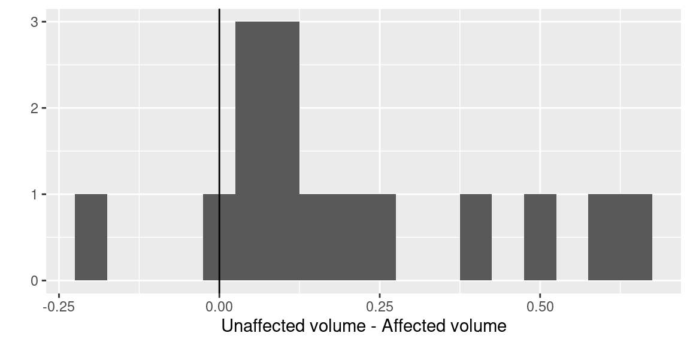

You saw t.test() last week for conducting a one sample t-test. The t.test() function can also be used to conduct both paired and two-sample t-tests. Not only can t.test() perform multiple types of t-test, there are multiple ways to specify the same test. In this lab, we’ll focus on the approach that is easiest when your data are in vectors, one vector for each sample, but I’ll point the alternate approaches for different data structures.
Either way, keep an eye on the output to confirm you are getting the kind of t-test you were attempting to specify.
You’ll use the same data presented in lecture. Recall, we have a random sample of 150 mothers and newborns from North Carolina. We are interested in testing the hypotheses: \[ H_0: \mu_{\text{smoker}} - \mu_{\text{nonsmoker}} = 0 \\ H_A: \mu_{\text{smoker}} - \mu_{\text{nonsmoker}} \ne 0 \] Where \(\mu_{\text{smoker}}\) represents the population mean weight of newborn babies born to mothers who smoked and \(\mu_{\text{non-smoker}}\) the population mean weight of newborn babies born to mothers who did not smoke. It doesn’t matter which population you label as “population 1” or “population 2” as long as you are consistent. Let’s say the “newborn babies born to mothers who did not smoke” are population 1, and “newborn babies born to mothers who smoked” are population 2.
This data is contained in the births data frame, and the variables we’ll need are weight and smoke:
library(openintro)
birthsLet’s extract the weight column for the rows where the smoke column is equal to "nonsmoker". These are our sample from population 1, newborns born to mothers who did not smoke (the drop=TRUE option is needed to make the result a vector, not a tibble data type with 1 column):
weights_nonsmoker <- births[births$smoke == "nonsmoker", "weight", drop=TRUE]weights_nonsmoker is just a vector of numbers so if we are interested in the sample statistics we can calculate them the usual way:
mean(weights_nonsmoker) ## [1] 7.1795sd(weights_nonsmoker)## [1] 1.434152length(weights_nonsmoker)## [1] 100These correspond to \(\overline{X}_1\), \(s_1\) and \(n_1\) using the notation in the lecture.
Similarly, we can extract the observations from population 2, and store them in another vector:
weights_smoker <- births[births$smoke == "smoker", "weight", drop=TRUE]Your turn
Find the sample mean, sample standard deviation and sample size for the observations from newborns born to mother’s who smoked:
mean(weights_smoker)
sd(weights_smoker)
length(weights_smoker)These sample statistics are all you need to calculate the Welch’s two sample t-ratio, but we’ll get t.test() to do it for us. A two sample t-test is performed if you provide both an x and y argument to t.test():
t.test(x = weights_nonsmoker, y = weights_smoker)##
## Welch Two Sample t-test
##
## data: weights_nonsmoker and weights_smoker
## t = 1.4967, df = 89.277, p-value = 0.138
## alternative hypothesis: true difference in means is not equal to 0
## 95 percent confidence interval:
## -0.1311663 0.9321663
## sample estimates:
## mean of x mean of y
## 7.1795 6.7790Notice the output starts with “Welch Two Sample t-test” — a good indication we’ve specified the right procedure. The output should look familiar from our one sample t-test: data is listed in the first line, followed by the test statistic, degrees of freedom, and p-value in the second line. The alternative hypothesis is stated next, followed by a 95% confidence interval for \(\mu_{\texttt{x}} - \mu_{\texttt{y}}\), where x and y correspond to the arguments you passed in.
To interpret the confidence interval you have to keep in mind the order you passed in the data. Since we put the non-smoker weight in first as the x argument, these endpoints are for \(\mu_{\text{nonsmoker}} - \mu_{\text{smoker}}\). This interval says, with 95% confidence,
\[
\mu_{\text{nonsmoker}} - \mu_{\text{smoker}} > -0.13 \quad \text{and}\\
\mu_{\text{nonsmoker}} - \mu_{\text{smoker}} < 0.93
\]
I find it easiest to interpret these in turn. Consider the first line, if the difference in means is negative, then \(\mu_{\text{smoker}}\) must be larger than \(\mu_{\text{nonsmoker}}\), i.e our lower bound says the mean weight of newborns born to mothers who did not smoke is 0.13 pounds lighter than those born to mother that did smoke.
In the second line, the difference in means is positive, so \(\mu_{\text{smoker}}\) must be smaller than \(\mu_{\text{nonsmoker}}\), i.e our upper bound says the mean weight of newborns born to mothers who did not smoke is 0.93 pounds heavier than those born to mother that did smoke.
Put those together and you get:
With 95% confidence the mean weight of babies born to mothers who smoke is between 0.13 pounds lighter and 0.93 pounds heavier than those born to mother that did smoke.
Your turn
What happens if you specify the two samples the other way around, run the code to check the output:t.test(x = weights_smoker, y = weights_nonsmoker)Flipping the order of the samples won’t change your conclusions.
In lecture we used slightly different syntax, known in R as a formula,
t.test(weight ~ smoke, data = births)The first argument weight ~ smoke specifies that weight column contains the values whose mean we are interested in, and that we want to examine how these vary based on values in the smoke column. The data argument specifies the data frame these columns are in.
Three big advantages of this formula approach:
If your data is already in a data frame you don’t need to extract the data, i.e. we can skip the step where we pulled the data out into vectors.
The point estimates get labelled automatically, you don’t have to remember which you passed into x and which into y.
The syntax is the way more complicated models, e.g. regression models, are specified in R, so it helps to transition to those.
Like the two-sample case, let’s use the data you saw in lecture. Recall, the study in which the volume of left hippocampus was measured for 14 twins, where one was affected by Schizophrenia.
We are interested in the hypotheses: \[ H_0: \mu_{\text{unaffected}} - \mu_{\text{affected}} = 0 \\ H_A: \mu_{\text{unaffected}} - \mu_{\text{affected}} \ne 0 \] where \(\mu_{\text{unaffected}}\) is the mean volume of the left hippocampus of people unaffected and \(\mu_{\text{unaffected}}\) is the mean volume of left hippocampus of those affected by Schizophrenia. Notice that the form of these hypotheses are identical to those in the two sample t-test case. The reason we do a paired t-test here, is not because our question is different, but the relationship between our observations is different.
This data is stored in the case0202 data frame, as part of the Sleuth3 package:
library(Sleuth3)
case0202The pairing in this study comes from the sets of twins: we have two measurements on set of twins — one from each person. In case0202 this is implicitly represented by the rows (e.g. there isn’t an explicit “family” identifier) — a observation in the Unaffected column is paired with the observation in the same row in the Affected column.
The syntax for t.test() to do a paired test is very similar to that of the two-sample test so we’ll need our samples from each population in vectors. This step is a little different than in the previous example because we can simply pull out the relevant columns, rather than having to find the relevant rows. Let’s grab the relevant columns:
volume_affected <- case0202[, "Affected"]
volume_unaffected <- case0202[, "Unaffected"](Note that drop=TRUE was not used here. drop=TRUE is the default when subsetting a single column from many old data types in R. It is only when we are dealing with some newer data types, such as, tibble, we need to be careful.)
You could find individual summary statistics like the mean and standard deviation,
mean(volume_affected)## [1] 1.56sd(volume_affected)## [1] 0.3012593However, recall with paired data, its the difference within pairs that are of most interest. We can calculate these differences directly:
volume_diff <- volume_unaffected - volume_affected
volume_diff## [1] 0.67 -0.19 0.09 0.19 0.13 0.40 0.04 0.10 0.50 0.07 0.23 0.59
## [13] 0.02 0.03 0.11Then use these to find the sample mean difference:
mean(volume_diff)## [1] 0.1986667Or take a look at them with a histogram:
qplot(volume_diff, binwidth = 0.05) +
geom_vline(xintercept = 0) +
labs(x = "Unaffected volume - Affected volume")
Now the paired t-test looks just like the two-sample t-test, but you need to set the paired argument to TRUE:
t.test(x = volume_unaffected, y = volume_affected,
paired = TRUE)##
## Paired t-test
##
## data: volume_unaffected and volume_affected
## t = 3.2289, df = 14, p-value = 0.006062
## alternative hypothesis: true difference in means is not equal to 0
## 95 percent confidence interval:
## 0.0667041 0.3306292
## sample estimates:
## mean of the differences
## 0.1986667Again, keep an eye on the output, the first line tells us this is a "Paired t-test". Everything should look familiar from the one sample case, since the operations are just like a one sample test on the differences.
Again to interpret the confidence interval and point estimate, you need to remember t.test() will do the first argument minus the second, i.e. volume_unaffected - volume_affected. The positive values in both the point estimate and confidence interval are reflecting that on average, the unaffected twin has the larger left hippocampus volume.
Here’s the corresponding summary:
There is convincing evidence the mean difference in brain volume between a person affected by schizophrenia and their twin unaffected by schizophrenia is not zero (paired t-test, p-value = 0.006, n = 15).
It is estimated the hippocampus in the twin affected by schizophrenia is 0.2 cm\(^3\) smaller on average than in the twin unaffected by schizophrenia.
With 95% confidence the mean difference is between 0.07 cm\(^3\) and 0.33 cm\(^3\).
The version in lecture took the difference explicitly, and then did a one-sample t-test:
t.test(volume_unaffected - volume_affected)##
## One Sample t-test
##
## data: volume_unaffected - volume_affected
## t = 3.2289, df = 14, p-value = 0.006062
## alternative hypothesis: true mean is not equal to 0
## 95 percent confidence interval:
## 0.0667041 0.3306292
## sample estimates:
## mean of x
## 0.1986667Alternatively, to use the formula interface, you would first have to reshape the data to have one row per observation, and a column to indicate population or group:
library(tidyverse)
case0202_long <- case0202 %>%
rowid_to_column("family_id") %>%
pivot_longer(cols = -family_id, names_to = "status", values_to = "volume")
case0202_longThen use the formula syntax:
t.test(volume ~ status, data = case0202_long, paired = TRUE)##
## Paired t-test
##
## data: volume by status
## t = -3.2289, df = 14, p-value = 0.006062
## alternative hypothesis: true difference in means is not equal to 0
## 95 percent confidence interval:
## -0.3306292 -0.0667041
## sample estimates:
## mean of the differences
## -0.1986667But, notice here the order of the subtraction has changed.